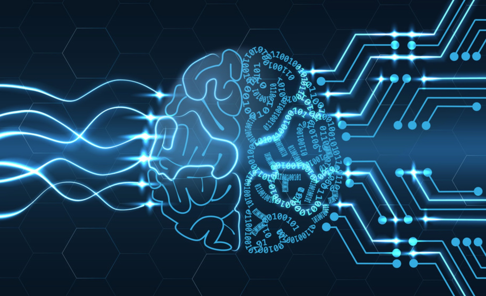
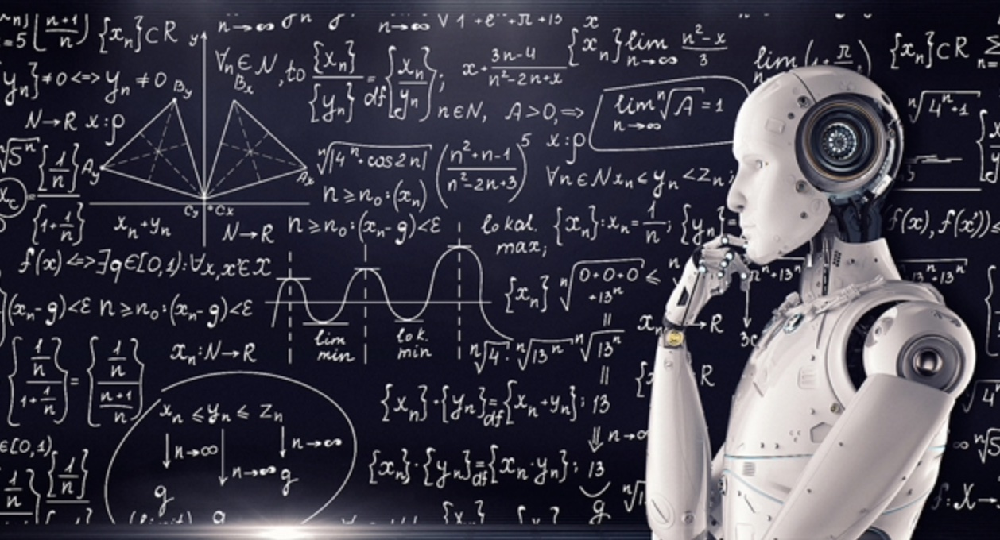

Nowadays, Artificial Intelligence (AI) is well known and technology has moved
very quickly in this field. Artificial intelligence is a simulation of the human intelligence
in machines. The machines act like the humans and do the tasks that are programmed for. The important
thing though for machines with artificial intelligence is that they rationalize and take actions
depending on which decision is best to make for achieving a specific goal. There are many things that AI
can accomplish and with this kind of help many goals will be achieved,for example self-driving cars.
Self driving cars will change everything, the transportation will be much more easier, maybe quicklier and safer.
There will be cameras that track the roads and any object that may be obstacles for the car so they can be avoided.
Therefore, self driving cars will be revolutionary and create many changes but also probably problems in different fields.

Human Intelligence in machines
Artificial intelligence is categorized in weak systems, which are the machines that have only one particular
job and in strong systems, which are the systems that have many tasks and considered to be human-like.
There is a theory that machines will take over the world, which is probably because of the movies with robots.
This scenario supports that machines will be out of the control of humans and will make their own decisions,
so they could turn against the humanity. Also possible scenarios are that machines will replace the human workforce
and people will not be needed, will not have jobs, thus will not have money to live. As it is known, AI can not feel
real emotions so it is unlikely to expect AI to become an enemy of humans.

Strong systems, human-like
The real danger with the use of the machines is that if this kind of technology goes in to the wrong hands it will
be devastating, because there is AI that is programmed to hurt or kill people like autonomous weapons. Surely there
would be some kind of security with machines but there is also a lot of unknown danger. Another important thing that
need to be mentioned is that AI is programmed to do that is told to so if someone fail to fully align the AI’s goals
with the person’s goal it could provoke a devastation outcome.